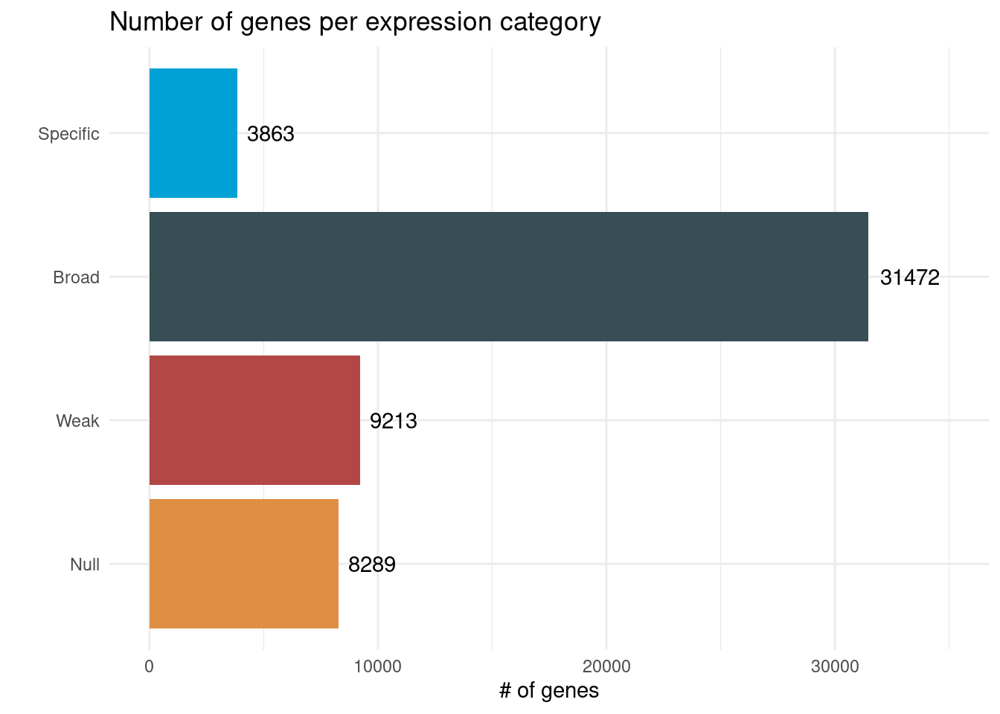
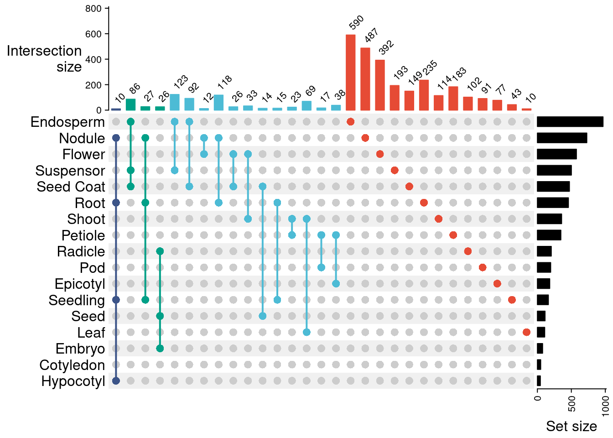
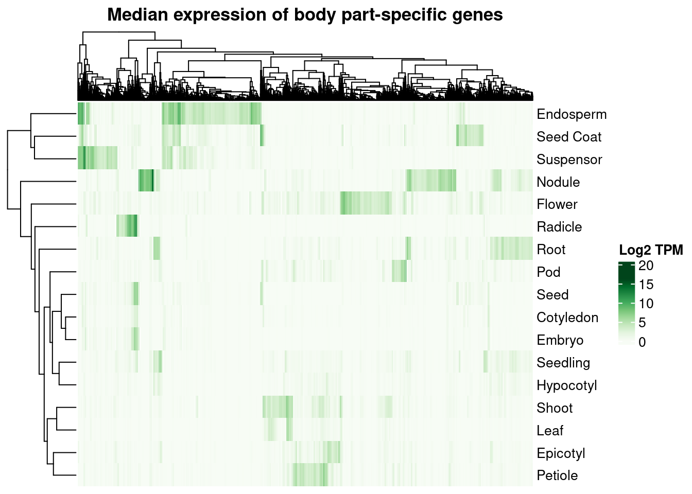
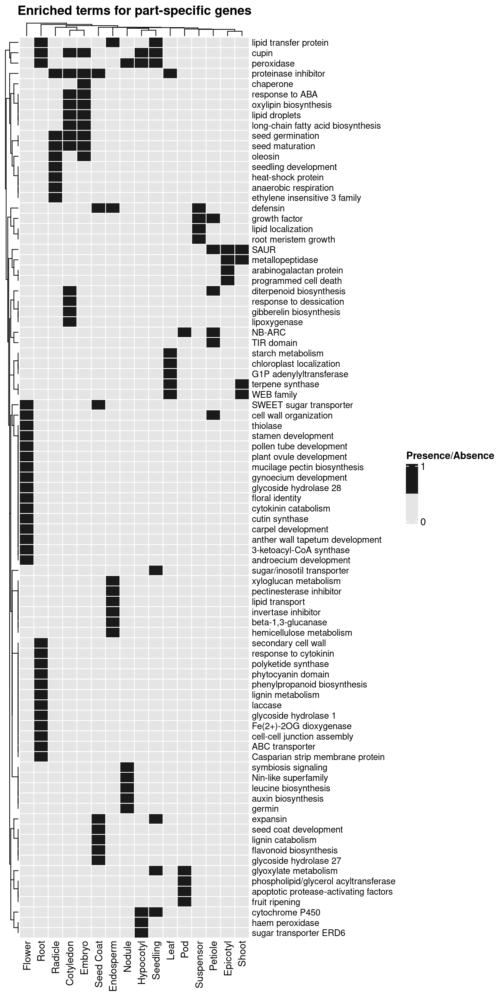
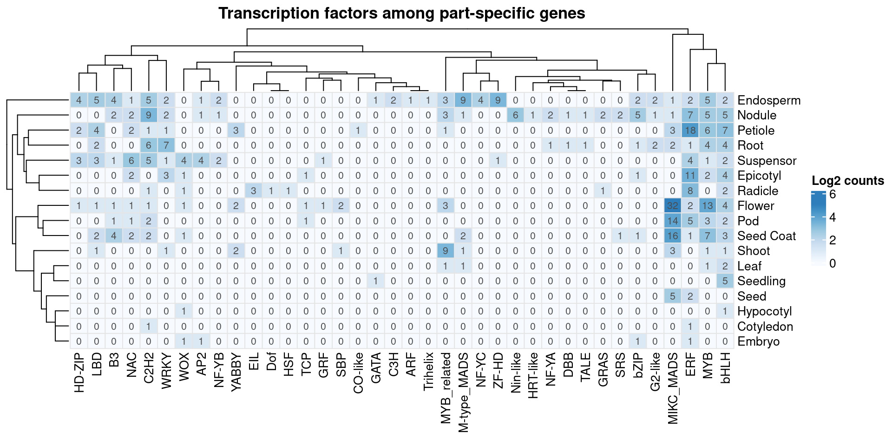

set.seed(123) # for reproducibility
# Load required packages
library(here)
library(arrow)
library(BioNERO)
library(tidyverse)
library(ComplexHeatmap)
library(patchwork)
library(clusterProfiler)
library(Biostrings)
library(planttfhunter)5 Exploring global expression profiles
Here, I will describe the code to:
- Classify genes into expression groups (null expression, weak expression, broad expression, and part-specific expression).
- Perform functional analyses on part-specific tissues.
- Identify part-specific transcription factors.
5.1 Classifying genes by expression profiles
In this section, I will calculate the \(\tau\) index of tissue-specificity using log-transformed TPM values. Then, I will use the \(\tau\) indices to classify genes into groups based on their expression profiles. First, let’s define a function to calculate \(\tau\) for each gene.
#' @param x A numeric vector with a gene's mean or median expression values
#' across tissues
calculate_tau <- function(x) {
tau <- NA
if(all(!is.na(x)) & min(x, na.rm = TRUE) >= 0) {
tau <- 0
if(max(x) != 0) {
x <- (1-(x / max(x, na.rm = TRUE)))
tau <- sum(x, na.rm = TRUE)
tau <- tau / (length(x) - 1)
}
}
return(tau)
}Now, I will create an expression matrix with genes in row names and median expression per body part in column. This is what we need to calculate \(\tau\). The parquet_dir directory below was downloaded from the FigShare repository associated with the publication (Almeida-Silva and Venancio 2023).
db <- open_dataset(
"~/Documents/app_data/parquet_dir"
)
# Body parts to use - exclude "whole plant" and "unknown"
parts <- c(
"root", "leaf", "shoot", "seedling", "seed", "cotyledon", "embryo",
"seed coat", "hypocotyl", "pod", "flower", "endosperm", "suspensor",
"nodule", "epicotyl", "radicle", "petiole"
)
# Create a vector of all gene IDs and split it into a list of 100 vectors
chunk <- function(x,n) split(x, cut(seq_along(x), n, labels = FALSE))
genes <- db |>
select(Gene) |>
unique() |>
collect() |>
pull(Gene) |>
chunk(n = 100)
# Get median expression per tissue
median_per_part_long <- Reduce(rbind, lapply(seq_along(genes), function(x) {
message("Working on set ", x)
df <- db |>
select(Gene, Sample, TPM, Part) |>
filter(Part %in% parts) |>
filter(Gene %in% genes[[x]]) |>
group_by(Part, Gene) |>
summarise(
Median = median(TPM)
) |>
ungroup() |>
collect()
return(df)
}))
median_per_part <- pivot_wider(
median_per_part_long, names_from = Part, values_from = Median
) |>
tibble::column_to_rownames("Gene") |>
as.matrix()Before calculating \(\tau\), I will exclude genes that are not expressed in any part. Here, “expressed genes” will be considered genes with median TPM >=1 in a body part.
# Remove genes with median TPM <1 in all body parts
remove <- apply(median_per_part, 1, function(x) all(x<1))
final_median_per_part <- median_per_part[!remove, ]
# Calculate Tau indices
tau <- apply(log2(final_median_per_part + 1), 1, calculate_tau)Now, I will classify genes into the following categories:
- Null expression: median TPM <1 in all tissues.
- Weak expression: median TPM <5 in all tissues.
- Broadly expressed: Tau <0.85.
- Body part-specific: Tau >=0.85.
# Create a long data frame of genes and medians per tissue
genes_median <- reshape2::melt(median_per_part) |>
dplyr::rename(Gene = Var1, Part = Var2, Median = value)
# Create a data frame of genes and tau
genes_tau <- data.frame(
Gene = names(tau),
Tau = as.numeric(tau)
)
# Classify genes
## Classify genes into categories
classified_genes <- left_join(genes_median, genes_tau) |>
## In how many parts is each gene expressed (TPM >1) and stably expressed (TPM >5)?
group_by(Gene) |>
mutate(
N_expressed = sum(Median > 1),
N_stable = sum(Median > 5)
) |>
## Classify genes
mutate(
Classification = case_when(
N_expressed == 0 ~ "Null",
N_stable == 0 ~ "Weak",
N_stable >= 1 & Tau < 0.85 ~ "Broad",
N_stable >= 1 & Tau >= 0.85 ~ "Specific"
)
) |>
ungroup()
## In which parts are body part-specific genes specifically expressed?
specific_genes_and_parts <- classified_genes |>
filter(Classification == "Specific" & Median > 5) |>
group_by(Gene) |>
summarise(
Specific_parts = str_c(Part, collapse = ",")
)
# Combine everything (classification + tissues) into a single data frame
final_classified_genes <- classified_genes |>
select(Gene, Tau, Classification) |>
distinct(Gene, .keep_all = TRUE) |>
left_join(specific_genes_and_parts) |>
arrange(Classification, Gene)
# Exploring classification visually
p_genes_per_group <- final_classified_genes |>
janitor::tabyl(Classification) |>
mutate(
Classification = factor(
Classification, levels = c("Null", "Weak", "Broad", "Specific")
)
) |>
ggplot(aes(x = n, y = Classification)) +
geom_bar(stat = "identity", fill = ggsci::pal_jama()(4)) +
geom_text(aes(label = n), hjust = -0.2) +
theme_minimal() +
labs(
title = "Number of genes per expression category",
x = "# of genes", y = ""
) +
xlim(0, 35000)
p_genes_per_group
Now, let’s make an UpSet plot to see the patterns of body part specificity across genes.
# Create a list of body parts and their specific genes
specific_genes_list <- final_classified_genes |>
filter(!is.na(Specific_parts)) |>
select(Gene, Specific_parts) |>
mutate(Specific_parts = str_to_title(Specific_parts)) |>
separate_longer_delim(Specific_parts, delim = ",") |>
as.data.frame()
specific_genes_list <- split(
specific_genes_list$Gene,
specific_genes_list$Specific_parts
)
# Create a combination matrix and filter it
comb_matrix <- make_comb_mat(specific_genes_list)
sizes <- comb_size(comb_matrix)
mat <- comb_matrix[sizes >= 10]
degree <- comb_degree(mat)
palette <- ggsci::pal_npg()(length(unique(degree)))
p_upset <- UpSet(
mat,
comb_col = palette[degree],
top_annotation = upset_top_annotation(
mat, add_numbers = TRUE, numbers_rot = 45
)
)
p_upset
We can also plot a heatmap of median expression profiles per part for all part-specific genes.
# Create expression matrix to plot with metadata
ts_genes <- final_classified_genes |>
filter(Classification == "Specific") |>
pull(Gene)
colnames(median_per_part) <- str_to_title(colnames(median_per_part))
exp_matrix <- log2(median_per_part[ts_genes, ] + 1)
# Plot median expression profiles with annotation per group
pal <- colorRampPalette(RColorBrewer::brewer.pal(9, "Greens"))(100)
p_heatmap_median <- ComplexHeatmap::pheatmap(
t(exp_matrix),
name = "Log2 TPM",
main = "Median expression of body part-specific genes",
show_rownames = TRUE,
show_colnames = FALSE,
color = pal
)
p_heatmap_median
5.2 Functional enrichment of part-specific genes
Here, I will perform a functional enrichment analysis to find overrepresented GO terms, protein domains, and MapMan bins in the sets of part-specific genes.
I will start by downloading and processing the functional annotation data from PLAZA 5.0 Dicots.
# Download functional annotation from PLAZA 5.0
base_url <- "https://ftp.psb.ugent.be/pub/plaza/plaza_public_dicots_05"
## GO
go <- read_tsv(
file.path(base_url, "GO/go.gma.csv.gz"), skip = 8
)
go <- list(
term2gene = go |> select(GO = go, Gene = `#gene_id`),
term2name = go |> select(GO = go, Description = description)
)
## InterPro domains
interpro <- read_tsv(
file.path(base_url, "InterPro/interpro.gma.csv.gz"), skip = 8
)
interpro <- list(
term2gene = interpro |> select(InterPro = motif_id, Gene = `#gene_id`),
term2name = interpro |> select(InterPro = motif_id, Description = description)
)
## MapMan
mapman <- read_tsv(
file.path(base_url, "MapMan/mapman.gma.csv.gz"), skip = 8
)
mapman <- list(
term2gene = mapman |> select(MapMan = mapman, Gene = gene_id),
term2name = mapman |> select(MapMan = mapman, Description = desc)
)Next, I will perform overrepresentation analyses for each set of part-specific genes (i.e,, elements of specific_genes_list). As background, we will use all genes that are expressed in at least one body part.
# Define background
background <- final_classified_genes |>
filter(Classification != "Null") |>
pull(Gene) |>
unique()
# Perform ORA
enrich_results <- lapply(specific_genes_list, function(x) {
go_enrich <- enricher(
x, universe = background,
qvalueCutoff = 0.05,
TERM2GENE = go$term2gene, TERM2NAME = go$term2name
)
interpro_enrich <- enricher(
x, universe = background,
qvalueCutoff = 0.05,
TERM2GENE = interpro$term2gene, TERM2NAME = interpro$term2name
)
mapman_enrich <- enricher(
x, universe = background,
qvalueCutoff = 0.05,
TERM2GENE = mapman$term2gene, TERM2NAME = mapman$term2name
)
final_df <- rbind(
as.data.frame(go_enrich) |> mutate(Category = "GO"),
as.data.frame(interpro_enrich) |> mutate(Category = "InterPro"),
as.data.frame(mapman_enrich) |> mutate(Category = "MapMan")
)
return(final_df)
})
# Combine results into a single data frame
enrichment_df <- Reduce(rbind, lapply(seq_along(enrich_results), function(x) {
part <- names(enrich_results)[x]
df <- enrich_results[[x]]
df$Part <- part
return(df)
}))
enrichment_df <- enrichment_df |>
filter(p.adjust <= 0.01)
write_tsv(
enrichment_df,
file = here("products", "tables", "enrichment_df.tsv")
)After a careful inspection of the enrichment results, I found the following enriched processes for each set of part-specific genes:
Cotyledon: seed maturation, seed germination, long-chain fatty acid biosynthesis, gibberelin biosynthesis, proteinase inhibitors, lipoxygenase, cupin, lipid droplets, response to dessication, oxylipin biosynthesis, diterpenoid biosynthesis, response to ABA.
Embryo: seed maturation, seed germination, lipid droplet, response to ABA, response to dessication, long-chain fatty acid biosynthesis, proteinase inhibitors, oxylipin biosynthesis, oleosin, cupin, chaperones.
Endosperm: lipid transport, xyloglucan metabolism, hemicellulose metabolism, lipid transfer protein, pectinesterase inhibitor, fructosidase inhibitor, invertase inhibitor, glycoside hydrolase 16, beta-1,3-glucanase, defensin.
Epicotyl: SAUR, arabinogalactan protein, FAS1 domain, metallopeptidase, ubiquitin ligase, programmed cell death.
Flower: pollen wall assembly, cell wall modification, carboxylic ester hydrolase, floral identity, floral development, stamen development, androecium development, pollen tube development, mucilage pectin biosynthesis, pectate lyase, carpel development, floral meristem determinancy, gynoecium development, cell tip growth, actin filament organization, anther wall tapetum development, plant ovule development, cytokinin catabolism, very-long-chain 3-ketoacyl-CoA synthase, glycoside hydrolase 28, SWEET sugar transporter, thiolase, cutin synthase.
Hypocotyl: peroxidase, haem peroxidase, cytochrome P450 superfamily, sugar transporter ERD6, iron binding, cupin.
Leaf: chloroplast localization, terpene synthase, WEB family, proteinase inhibitor I3, glucose-1-phosphate adenylyltransferase, starch metabolism.
Nodule: peroxidase, leucine biosynthesis, MFS transporter superfamily, auxin biosynthesis, Nin-like superfamily, symbiosis signaling, germin.
Petiole: NAD+ nucleosidase, diterpenoid biosynthesis, SAUR, growth factor activity, FAS1 domain, TIR domain, NB-ARC, effector-triggered immunity, cell wall organization.
Pod: fruit ripening, glyoxylate metabolism, phosphatidylethanolamine-binding protein family, NB-ARC, phospholipid/glycerol acyltransferase, apoptotic protease-activating factors.
Radicle: lipid storage, seed maturation, seed germination, anaerobic respiration, seedling development, heat-shock protein, proteinase inhibitor, ethylene insensitive 3 family, oleosin.
Root: peroxidase, Casparian strip membrane protein, secondary cell wall, cell-cell junction assembly, phenylpropanoid biosynthesis, lignin metabolism, response to cytokinin, ABC transporter, cupin, laccase, lipid transfer protein, glycoside hydrolase 1, Fe(2+)-2OG dioxygenase, polyketide synthase, CAP domain, phytocyanin domain.
Seed: seed germination, seed maturation, lipid storage, lipid droplets, proteinase inhibitor, protein storage, olylipin biosynthesis, long-chain fatty acid biosynthesis, oleosin.
Seed coat: seed coat development, flavonoid biosynthesis, amine-lyase activity, xenobiotic transport, lignin catabolism, SWEET sugar transporter, defensin, glycoside hydrolase 27, expansin, proteinase inhibitor.
Seedling: glyoxylate metabolism, peroxidase, cytochrome P450, cupin, lipid transfer protein, sugar/inosotil transporter, expansin, FAD-linked oxidase.
Shoot: terpene synthase, SAUR, metallopeptidase, WEB family, SPX family.
Suspensor: root meristem growth, growth factor, defensin-like protein, lipid localization.
To summarize the results in a clearer way, let’s visualize the biological processes associated with each part as a presence/absence heatmap.
# Create a list of vectors with terms associated with each gene set
terms_list <- list(
Cotyledon = c(
"seed maturation", "seed germination", "gibberelin biosynthesis",
"long-chain fatty acid biosynthesis", "proteinase inhibitor",
"lipoxygenase", "cupin", "lipid droplets", "response to dessication",
"oxylipin biosynthesis", "diterpenoid biosynthesis", "response to ABA"
),
Embryo = c(
"seed maturation", "seed germination", "lipid droplets",
"response to ABA", "long-chain fatty acid biosynthesis",
"proteinase inhibitor", "oxylipin biosynthesis", "oleosin",
"cupin", "chaperone"
),
Endosperm = c(
"lipid transport", "xyloglucan metabolism", "hemicellulose metabolism",
"lipid transfer protein",
"pectinesterase inhibitor",
"invertase inhibitor",
"beta-1,3-glucanase", "defensin"
),
Epicotyl = c(
"SAUR", "arabinogalactan protein",
"metallopeptidase", "programmed cell death"
),
Flower = c(
"cell wall organization", "floral identity",
"stamen development", "androecium development",
"pollen tube development", "mucilage pectin biosynthesis",
"carpel development",
"gynoecium development",
"anther wall tapetum development",
"plant ovule development", "cytokinin catabolism",
"3-ketoacyl-CoA synthase", "glycoside hydrolase 28",
"SWEET sugar transporter", "thiolase", "cutin synthase"
),
Hypocotyl = c(
"peroxidase", "haem peroxidase", "cytochrome P450",
"sugar transporter ERD6", "cupin"
),
Leaf = c(
"chloroplast localization", "terpene synthase", "WEB family",
"proteinase inhibitor", "G1P adenylyltransferase",
"starch metabolism"
),
Nodule = c(
"peroxidase", "leucine biosynthesis", "auxin biosynthesis",
"Nin-like superfamily", "symbiosis signaling", "germin"
),
Petiole = c(
"diterpenoid biosynthesis", "SAUR",
"growth factor", "TIR domain", "NB-ARC",
"cell wall organization"
),
Pod = c(
"fruit ripening", "glyoxylate metabolism",
"NB-ARC",
"phospholipid/glycerol acyltransferase",
"apoptotic protease-activating factors"
),
Radicle = c(
"seed maturation", "seed germination",
"anaerobic respiration", "seedling development", "heat-shock protein",
"proteinase inhibitor", "ethylene insensitive 3 family", "oleosin"
),
Root = c(
"peroxidase", "Casparian strip membrane protein", "secondary cell wall",
"cell-cell junction assembly", "phenylpropanoid biosynthesis",
"lignin metabolism", "response to cytokinin", "ABC transporter",
"cupin", "laccase", "lipid transfer protein", "glycoside hydrolase 1",
"Fe(2+)-2OG dioxygenase", "polyketide synthase",
"phytocyanin domain"
),
`Seed Coat` = c(
"seed coat development", "flavonoid biosynthesis",
"lignin catabolism",
"SWEET sugar transporter", "defensin", "glycoside hydrolase 27",
"expansin", "proteinase inhibitor"
),
Seedling = c(
"glyoxylate metabolism", "peroxidase", "cytochrome P450",
"cupin", "lipid transfer protein", "sugar/inosotil transporter",
"expansin"
),
Shoot = c(
"terpene synthase", "SAUR", "metallopeptidase", "WEB family"
),
Suspensor = c(
"root meristem growth", "growth factor", "defensin",
"lipid localization"
)
)
# Create a binary (i.e., presence/absence) matrix from list
pam <- ComplexHeatmap::list_to_matrix(terms_list)
# Plot heatmap
p_heatmap_terms_pav <- ComplexHeatmap::pheatmap(
pam, color = c("grey90", "grey10"),
border_color = "white",
name = "Presence/Absence",
main = "Enriched terms for part-specific genes",
fontsize_row = 9,
breaks = c(0, 0.5, 1),
legend_breaks = c(0, 1)
)
# Change height and width of the column and row dendrograms, respectively
p_heatmap_terms_pav@row_dend_param$width <- unit(5, "mm")
p_heatmap_terms_pav@column_dend_param$height <- unit(5, "mm")
p_heatmap_terms_pav
5.3 Identifying part-specific transcription factors
Lastly, I will identify transcription factors among part-specific genes and explore their families to find the putative regulators of each part’s transcriptional programs.
# Get TF list from PlantTFDB
gma_tfs <- read_tsv(
"http://planttfdb.gao-lab.org/download/TF_list/Gma_TF_list.txt.gz"
) |>
select(Gene = Gene_ID, Family) |>
distinct(Gene, .keep_all = TRUE)
# Count number of TFs per family among part-specific genes
tf_counts <- inner_join(
final_classified_genes |> dplyr::filter(Classification == "Specific"),
gma_tfs
) |>
select(Gene, Family, Specific_parts) |>
mutate(Specific_parts = str_to_title(Specific_parts)) |>
separate_longer_delim(Specific_parts, delim = ",") |>
group_by(Specific_parts) |>
count(Family, .drop = FALSE) |>
pivot_wider(names_from = Family, values_from = n) |>
tibble::column_to_rownames("Specific_parts") |>
as.matrix()
tf_counts[is.na(tf_counts)] <- 0
# Plot heatmap
pal <- colorRampPalette(RColorBrewer::brewer.pal(9, "Blues"))(100)[1:70]
p_heatmap_specific_tfs <- ComplexHeatmap::pheatmap(
log2(tf_counts + 1),
color = pal,
display_numbers = tf_counts,
border_color = "gray90",
name = "Log2 counts",
main = "Transcription factors among part-specific genes"
)
p_heatmap_specific_tfs
To wrap it all up, I will save the objects with plots and important results to files, so that they can be easily explored later.
save(
median_per_part, compress = "xz",
file = here("products", "result_files", "median_per_part.rda")
)
save(
final_classified_genes, compress = "xz",
file = here("products", "result_files", "final_classified_genes.rda")
)
save(
enrichment_df, compress = "xz",
file = here("products", "result_files", "enrichment_df.rda")
)
save(
p_genes_per_group, compress = "xz",
file = here("products", "plots", "p_genes_per_group.rda")
)
save(
p_upset, compress = "xz",
file = here("products", "plots", "p_upset.rda")
)
save(
p_heatmap_median, compress = "xz",
file = here("products", "plots", "p_heatmap_median.rda")
)
save(
p_heatmap_terms_pav, compress = "xz",
file = here("products", "plots", "p_heatmap_terms_pav.rda")
)
save(
p_heatmap_specific_tfs, compress = "xz",
file = here("products", "plots", "p_heatmap_specific_tfs.rda")
)Session information
This document was created under the following conditions:
sessioninfo::session_info()─ Session info ───────────────────────────────────────────────────────────────
setting value
version R version 4.3.0 (2023-04-21)
os Ubuntu 20.04.5 LTS
system x86_64, linux-gnu
ui X11
language (EN)
collate en_US.UTF-8
ctype en_US.UTF-8
tz Europe/Brussels
date 2023-06-23
pandoc 3.1.1 @ /usr/lib/rstudio/resources/app/bin/quarto/bin/tools/ (via rmarkdown)
─ Packages ───────────────────────────────────────────────────────────────────
package * version date (UTC) lib source
abind 1.4-5 2016-07-21 [1] CRAN (R 4.3.0)
annotate 1.78.0 2023-04-25 [1] Bioconductor
AnnotationDbi 1.62.0 2023-04-25 [1] Bioconductor
ape 5.7-1 2023-03-13 [1] CRAN (R 4.3.0)
aplot 0.1.10 2023-03-08 [1] CRAN (R 4.3.0)
arrow * 11.0.0.3 2023-03-08 [1] CRAN (R 4.3.0)
assertthat 0.2.1 2019-03-21 [1] CRAN (R 4.3.0)
backports 1.4.1 2021-12-13 [1] CRAN (R 4.3.0)
base64enc 0.1-3 2015-07-28 [1] CRAN (R 4.3.0)
Biobase 2.60.0 2023-04-25 [1] Bioconductor
BiocGenerics * 0.46.0 2023-04-25 [1] Bioconductor
BiocParallel 1.34.0 2023-04-25 [1] Bioconductor
BioNERO * 1.9.3 2023-06-20 [1] Github (almeidasilvaf/BioNERO@cd9bec2)
Biostrings * 2.68.0 2023-04-25 [1] Bioconductor
bit 4.0.5 2022-11-15 [1] CRAN (R 4.3.0)
bit64 4.0.5 2020-08-30 [1] CRAN (R 4.3.0)
bitops 1.0-7 2021-04-24 [1] CRAN (R 4.3.0)
blob 1.2.4 2023-03-17 [1] CRAN (R 4.3.0)
cachem 1.0.8 2023-05-01 [1] CRAN (R 4.3.0)
Cairo 1.6-0 2022-07-05 [1] CRAN (R 4.3.0)
checkmate 2.2.0 2023-04-27 [1] CRAN (R 4.3.0)
circlize 0.4.15 2022-05-10 [1] CRAN (R 4.3.0)
cli 3.6.1 2023-03-23 [1] CRAN (R 4.3.0)
clue 0.3-64 2023-01-31 [1] CRAN (R 4.3.0)
cluster 2.1.4 2022-08-22 [4] CRAN (R 4.2.1)
clusterProfiler * 4.8.1 2023-05-03 [1] Bioconductor
coda 0.19-4 2020-09-30 [1] CRAN (R 4.3.0)
codetools 0.2-19 2023-02-01 [4] CRAN (R 4.2.2)
colorspace 2.1-0 2023-01-23 [1] CRAN (R 4.3.0)
ComplexHeatmap * 2.16.0 2023-04-25 [1] Bioconductor
cowplot 1.1.1 2020-12-30 [1] CRAN (R 4.3.0)
crayon 1.5.2 2022-09-29 [1] CRAN (R 4.3.0)
curl 5.0.0 2023-01-12 [1] CRAN (R 4.3.0)
data.table 1.14.8 2023-02-17 [1] CRAN (R 4.3.0)
DBI 1.1.3 2022-06-18 [1] CRAN (R 4.3.0)
DelayedArray 0.26.1 2023-05-01 [1] Bioconductor
digest 0.6.31 2022-12-11 [1] CRAN (R 4.3.0)
doParallel 1.0.17 2022-02-07 [1] CRAN (R 4.3.0)
DOSE 3.26.1 2023-05-03 [1] Bioconductor
downloader 0.4 2015-07-09 [1] CRAN (R 4.3.0)
dplyr * 1.1.2 2023-04-20 [1] CRAN (R 4.3.0)
dynamicTreeCut 1.63-1 2016-03-11 [1] CRAN (R 4.3.0)
edgeR 3.42.0 2023-04-25 [1] Bioconductor
enrichplot 1.20.0 2023-04-25 [1] Bioconductor
evaluate 0.20 2023-01-17 [1] CRAN (R 4.3.0)
fansi 1.0.4 2023-01-22 [1] CRAN (R 4.3.0)
farver 2.1.1 2022-07-06 [1] CRAN (R 4.3.0)
fastcluster 1.2.3 2021-05-24 [1] CRAN (R 4.3.0)
fastmap 1.1.1 2023-02-24 [1] CRAN (R 4.3.0)
fastmatch 1.1-3 2021-07-23 [1] CRAN (R 4.3.0)
fgsea 1.26.0 2023-04-25 [1] Bioconductor
forcats * 1.0.0 2023-01-29 [1] CRAN (R 4.3.0)
foreach 1.5.2 2022-02-02 [1] CRAN (R 4.3.0)
foreign 0.8-82 2022-01-13 [4] CRAN (R 4.1.2)
Formula 1.2-5 2023-02-24 [1] CRAN (R 4.3.0)
genefilter 1.82.0 2023-04-25 [1] Bioconductor
generics 0.1.3 2022-07-05 [1] CRAN (R 4.3.0)
GENIE3 1.22.0 2023-04-25 [1] Bioconductor
GenomeInfoDb * 1.36.0 2023-04-25 [1] Bioconductor
GenomeInfoDbData 1.2.10 2023-04-28 [1] Bioconductor
GenomicRanges 1.52.0 2023-04-25 [1] Bioconductor
GetoptLong 1.0.5 2020-12-15 [1] CRAN (R 4.3.0)
ggdendro 0.1.23 2022-02-16 [1] CRAN (R 4.3.0)
ggforce 0.4.1 2022-10-04 [1] CRAN (R 4.3.0)
ggfun 0.0.9 2022-11-21 [1] CRAN (R 4.3.0)
ggnetwork 0.5.12 2023-03-06 [1] CRAN (R 4.3.0)
ggplot2 * 3.4.1 2023-02-10 [1] CRAN (R 4.3.0)
ggplotify 0.1.0 2021-09-02 [1] CRAN (R 4.3.0)
ggraph 2.1.0 2022-10-09 [1] CRAN (R 4.3.0)
ggrepel 0.9.3 2023-02-03 [1] CRAN (R 4.3.0)
ggsci 3.0.0 2023-03-08 [1] CRAN (R 4.3.0)
ggtree 3.8.0 2023-04-25 [1] Bioconductor
GlobalOptions 0.1.2 2020-06-10 [1] CRAN (R 4.3.0)
glue 1.6.2 2022-02-24 [1] CRAN (R 4.3.0)
GO.db 3.17.0 2023-05-02 [1] Bioconductor
GOSemSim 2.26.0 2023-04-25 [1] Bioconductor
graphlayouts 1.0.0 2023-05-01 [1] CRAN (R 4.3.0)
gridExtra 2.3 2017-09-09 [1] CRAN (R 4.3.0)
gridGraphics 0.5-1 2020-12-13 [1] CRAN (R 4.3.0)
gson 0.1.0 2023-03-07 [1] CRAN (R 4.3.0)
gtable 0.3.3 2023-03-21 [1] CRAN (R 4.3.0)
HDO.db 0.99.1 2023-06-20 [1] Bioconductor
here * 1.0.1 2020-12-13 [1] CRAN (R 4.3.0)
Hmisc 5.0-1 2023-03-08 [1] CRAN (R 4.3.0)
hms 1.1.3 2023-03-21 [1] CRAN (R 4.3.0)
htmlTable 2.4.1 2022-07-07 [1] CRAN (R 4.3.0)
htmltools 0.5.5 2023-03-23 [1] CRAN (R 4.3.0)
htmlwidgets 1.6.2 2023-03-17 [1] CRAN (R 4.3.0)
httr 1.4.5 2023-02-24 [1] CRAN (R 4.3.0)
igraph 1.4.2 2023-04-07 [1] CRAN (R 4.3.0)
impute 1.74.0 2023-04-25 [1] Bioconductor
intergraph 2.0-2 2016-12-05 [1] CRAN (R 4.3.0)
IRanges * 2.34.0 2023-04-25 [1] Bioconductor
iterators 1.0.14 2022-02-05 [1] CRAN (R 4.3.0)
janitor 2.2.0 2023-02-02 [1] CRAN (R 4.3.0)
jsonlite 1.8.4 2022-12-06 [1] CRAN (R 4.3.0)
KEGGREST 1.40.0 2023-04-25 [1] Bioconductor
knitr 1.42 2023-01-25 [1] CRAN (R 4.3.0)
labeling 0.4.2 2020-10-20 [1] CRAN (R 4.3.0)
lattice 0.20-45 2021-09-22 [4] CRAN (R 4.2.0)
lazyeval 0.2.2 2019-03-15 [1] CRAN (R 4.3.0)
lifecycle 1.0.3 2022-10-07 [1] CRAN (R 4.3.0)
limma 3.56.0 2023-04-25 [1] Bioconductor
locfit 1.5-9.7 2023-01-02 [1] CRAN (R 4.3.0)
lubridate * 1.9.2 2023-02-10 [1] CRAN (R 4.3.0)
magick 2.7.4 2023-03-09 [1] CRAN (R 4.3.0)
magrittr 2.0.3 2022-03-30 [1] CRAN (R 4.3.0)
MASS 7.3-58.2 2023-01-23 [4] CRAN (R 4.2.2)
Matrix 1.5-1 2022-09-13 [4] CRAN (R 4.2.1)
MatrixGenerics 1.12.2 2023-06-09 [1] Bioconductor
matrixStats 1.0.0 2023-06-02 [1] CRAN (R 4.3.0)
memoise 2.0.1 2021-11-26 [1] CRAN (R 4.3.0)
mgcv 1.8-41 2022-10-21 [4] CRAN (R 4.2.1)
minet 3.58.0 2023-04-25 [1] Bioconductor
munsell 0.5.0 2018-06-12 [1] CRAN (R 4.3.0)
NetRep 1.2.6 2023-01-06 [1] CRAN (R 4.3.0)
network 1.18.1 2023-01-24 [1] CRAN (R 4.3.0)
nlme 3.1-162 2023-01-31 [4] CRAN (R 4.2.2)
nnet 7.3-18 2022-09-28 [4] CRAN (R 4.2.1)
patchwork * 1.1.2 2022-08-19 [1] CRAN (R 4.3.0)
pillar 1.9.0 2023-03-22 [1] CRAN (R 4.3.0)
pkgconfig 2.0.3 2019-09-22 [1] CRAN (R 4.3.0)
planttfhunter * 0.99.2 2023-06-21 [1] Github (almeidasilvaf/planttfhunter@6fb8551)
plyr 1.8.8 2022-11-11 [1] CRAN (R 4.3.0)
png 0.1-8 2022-11-29 [1] CRAN (R 4.3.0)
polyclip 1.10-4 2022-10-20 [1] CRAN (R 4.3.0)
preprocessCore 1.62.0 2023-04-25 [1] Bioconductor
purrr * 1.0.1 2023-01-10 [1] CRAN (R 4.3.0)
qvalue 2.32.0 2023-04-25 [1] Bioconductor
R6 2.5.1 2021-08-19 [1] CRAN (R 4.3.0)
RColorBrewer 1.1-3 2022-04-03 [1] CRAN (R 4.3.0)
Rcpp 1.0.10 2023-01-22 [1] CRAN (R 4.3.0)
RCurl 1.98-1.12 2023-03-27 [1] CRAN (R 4.3.0)
readr * 2.1.4 2023-02-10 [1] CRAN (R 4.3.0)
reshape2 1.4.4 2020-04-09 [1] CRAN (R 4.3.0)
RhpcBLASctl 0.23-42 2023-02-11 [1] CRAN (R 4.3.0)
rjson 0.2.21 2022-01-09 [1] CRAN (R 4.3.0)
rlang 1.1.1 2023-04-28 [1] CRAN (R 4.3.0)
rmarkdown 2.21 2023-03-26 [1] CRAN (R 4.3.0)
rpart 4.1.19 2022-10-21 [4] CRAN (R 4.2.1)
rprojroot 2.0.3 2022-04-02 [1] CRAN (R 4.3.0)
RSQLite 2.3.1 2023-04-03 [1] CRAN (R 4.3.0)
rstudioapi 0.14 2022-08-22 [1] CRAN (R 4.3.0)
S4Arrays 1.0.1 2023-05-01 [1] Bioconductor
S4Vectors * 0.38.0 2023-04-25 [1] Bioconductor
scales 1.2.1 2022-08-20 [1] CRAN (R 4.3.0)
scatterpie 0.2.1 2023-06-07 [1] CRAN (R 4.3.0)
sessioninfo 1.2.2 2021-12-06 [1] CRAN (R 4.3.0)
shadowtext 0.1.2 2022-04-22 [1] CRAN (R 4.3.0)
shape 1.4.6 2021-05-19 [1] CRAN (R 4.3.0)
snakecase 0.11.0 2019-05-25 [1] CRAN (R 4.3.0)
statmod 1.5.0 2023-01-06 [1] CRAN (R 4.3.0)
statnet.common 4.8.0 2023-01-24 [1] CRAN (R 4.3.0)
stringi 1.7.12 2023-01-11 [1] CRAN (R 4.3.0)
stringr * 1.5.0 2022-12-02 [1] CRAN (R 4.3.0)
SummarizedExperiment 1.30.1 2023-05-01 [1] Bioconductor
survival 3.5-3 2023-02-12 [4] CRAN (R 4.2.2)
sva 3.48.0 2023-04-25 [1] Bioconductor
tibble * 3.2.1 2023-03-20 [1] CRAN (R 4.3.0)
tidygraph 1.2.3 2023-02-01 [1] CRAN (R 4.3.0)
tidyr * 1.3.0 2023-01-24 [1] CRAN (R 4.3.0)
tidyselect 1.2.0 2022-10-10 [1] CRAN (R 4.3.0)
tidytree 0.4.2 2022-12-18 [1] CRAN (R 4.3.0)
tidyverse * 2.0.0 2023-02-22 [1] CRAN (R 4.3.0)
timechange 0.2.0 2023-01-11 [1] CRAN (R 4.3.0)
treeio 1.24.1 2023-05-31 [1] Bioconductor
tweenr 2.0.2 2022-09-06 [1] CRAN (R 4.3.0)
tzdb 0.3.0 2022-03-28 [1] CRAN (R 4.3.0)
utf8 1.2.3 2023-01-31 [1] CRAN (R 4.3.0)
vctrs 0.6.2 2023-04-19 [1] CRAN (R 4.3.0)
viridis 0.6.2 2021-10-13 [1] CRAN (R 4.3.0)
viridisLite 0.4.2 2023-05-02 [1] CRAN (R 4.3.0)
vroom 1.6.3 2023-04-28 [1] CRAN (R 4.3.0)
WGCNA 1.72-1 2023-01-18 [1] CRAN (R 4.3.0)
withr 2.5.0 2022-03-03 [1] CRAN (R 4.3.0)
xfun 0.39 2023-04-20 [1] CRAN (R 4.3.0)
XML 3.99-0.14 2023-03-19 [1] CRAN (R 4.3.0)
xtable 1.8-4 2019-04-21 [1] CRAN (R 4.3.0)
XVector * 0.40.0 2023-04-25 [1] Bioconductor
yaml 2.3.7 2023-01-23 [1] CRAN (R 4.3.0)
yulab.utils 0.0.6 2022-12-20 [1] CRAN (R 4.3.0)
zlibbioc 1.46.0 2023-04-25 [1] Bioconductor
[1] /home/faalm/R/x86_64-pc-linux-gnu-library/4.3
[2] /usr/local/lib/R/site-library
[3] /usr/lib/R/site-library
[4] /usr/lib/R/library
──────────────────────────────────────────────────────────────────────────────